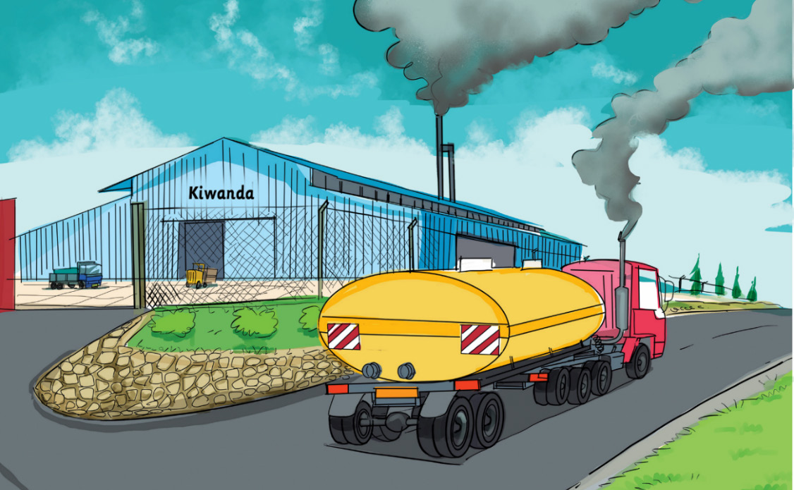

Moshi kutoka viwandani, kwenye magari, na nyumbani
Moshi kutoka viwandani, kwenye magari, na nyumbani unachangia uharibifu wa mazingira na huweza kuathiri ubora wa hewa. Hii ni kwa sababu moshi una hewaukaa ambayo husababisha uchafuzi wa hewa na ongezeko la joto duniani. Matumizi ya kuni na mkaa katika kupikia huzalisha hewaukaa ambayo huchafua hewa na hivyo, kuharibu mazingira. Kielelezo namba 2 kinawasilisha uchafuzi wa hewa utokanao na moshi wa viwandani na magari.

Hivyo, jamii inapaswa kutumia magari yanayotumia nishati ya umeme au gesi ili kuepuka uchafuzi wa hewa. Pia, viwanda ni vema vikatumia teknolojia ya kusafisha gesi inayotoka kabla ya kwenda angani. Vilevile, kupanda miti kwa wingi ili kusaidia kupunguza hewaukaa. Aidha, watu wanapaswa kutumia nishati mbadala kama vile gesi